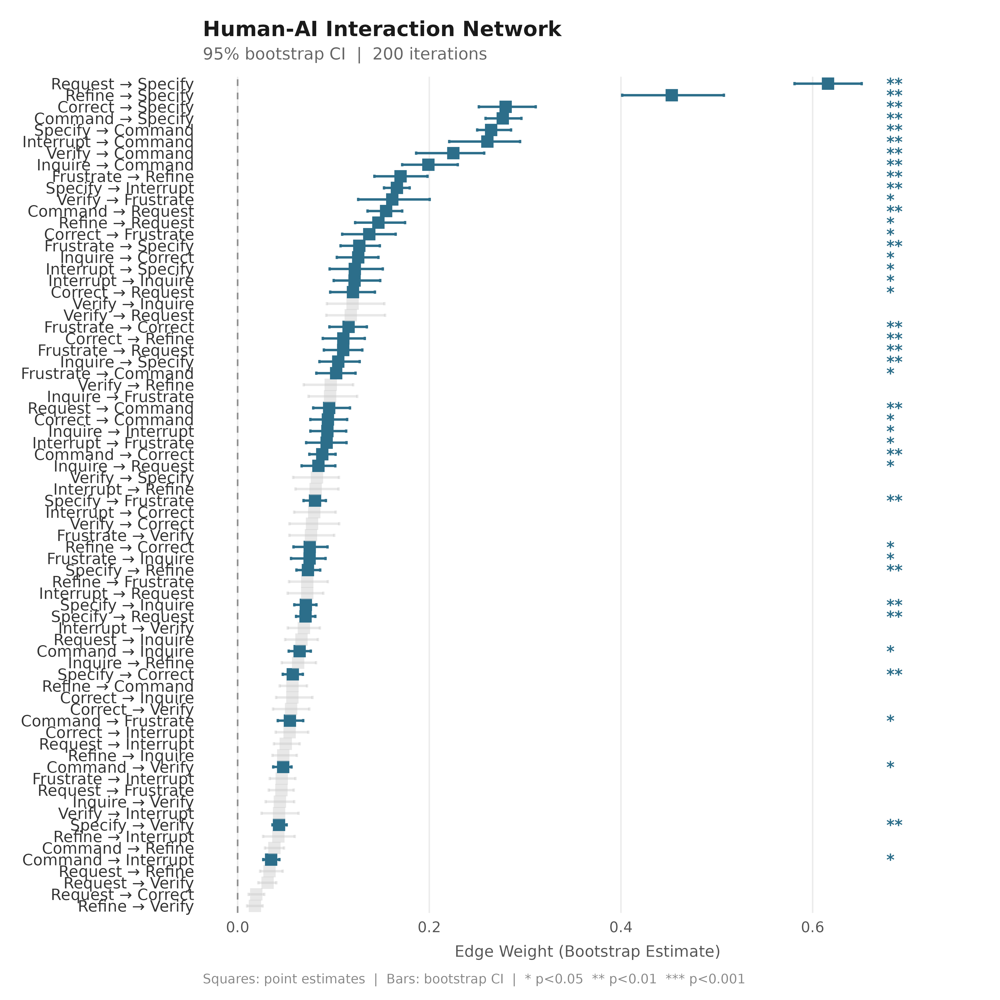
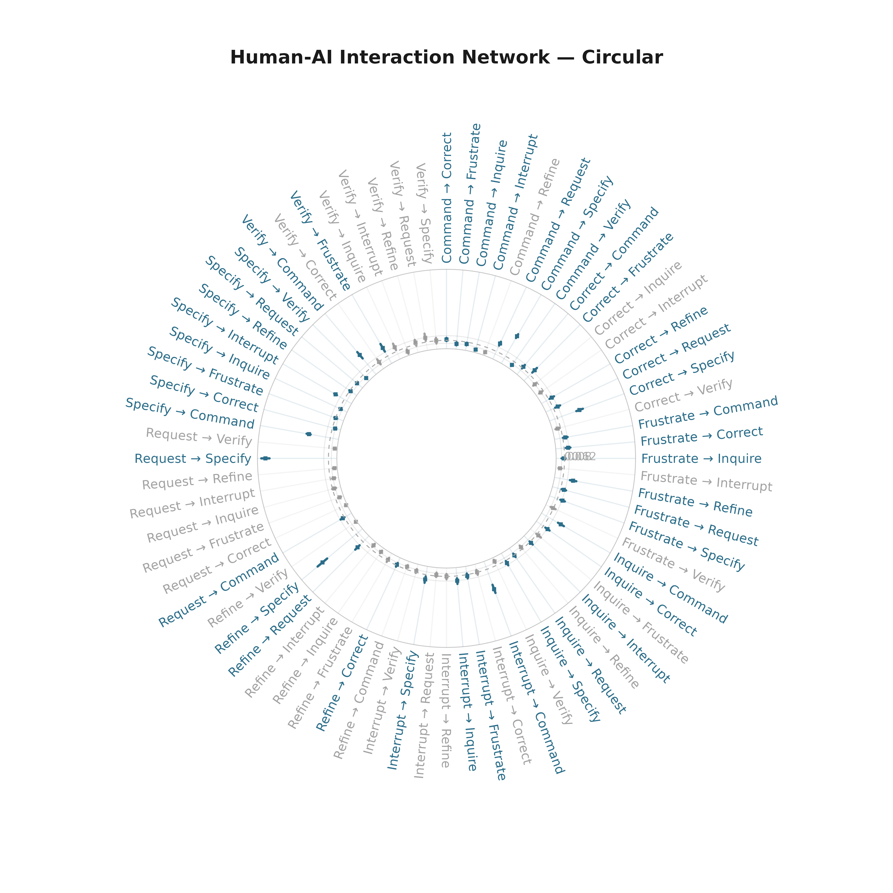
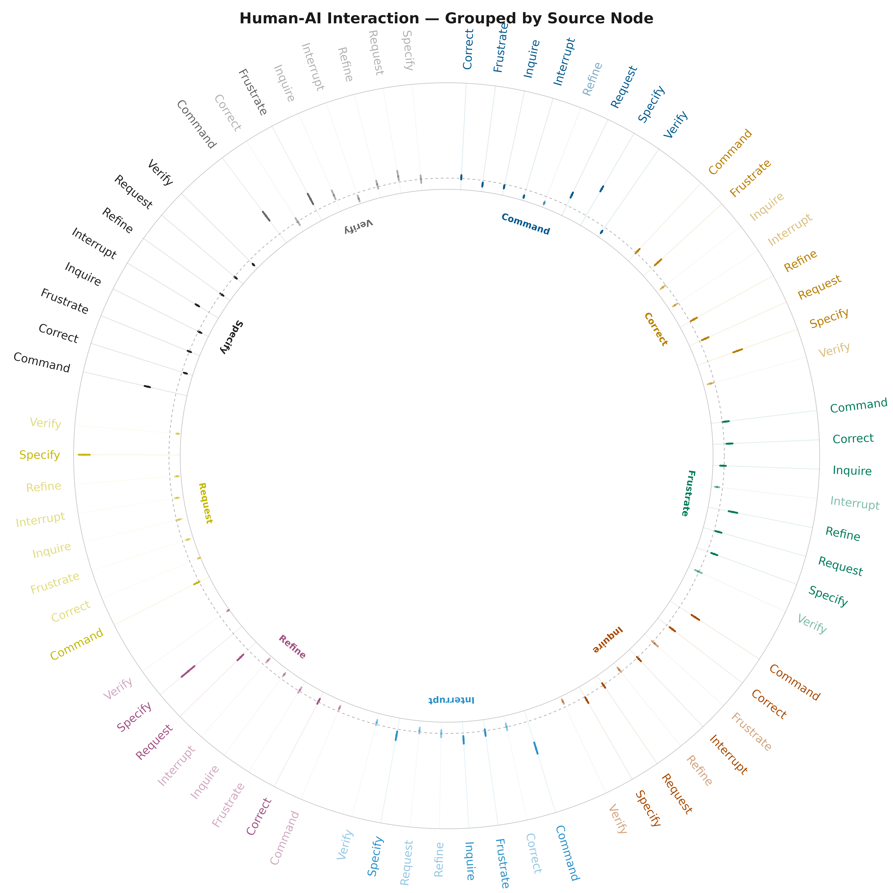
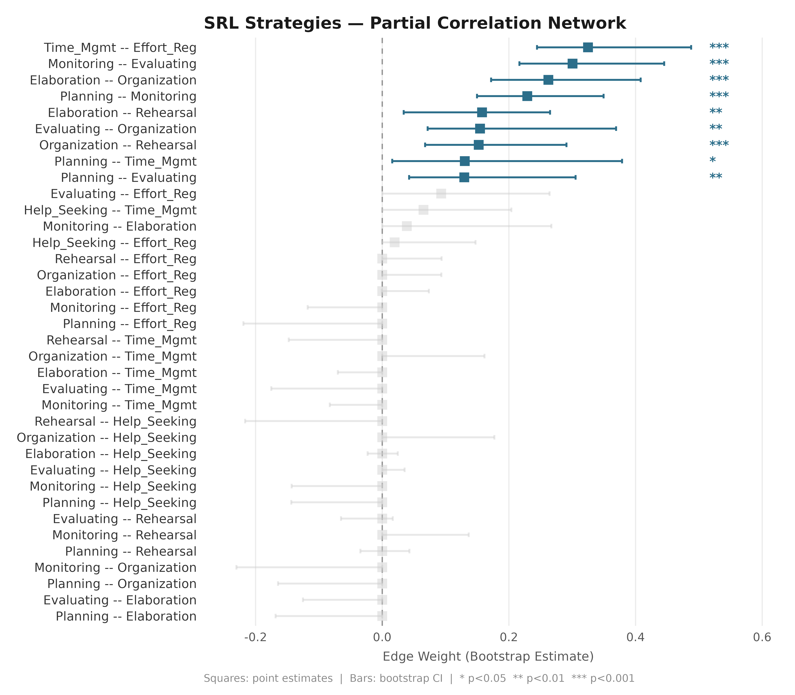
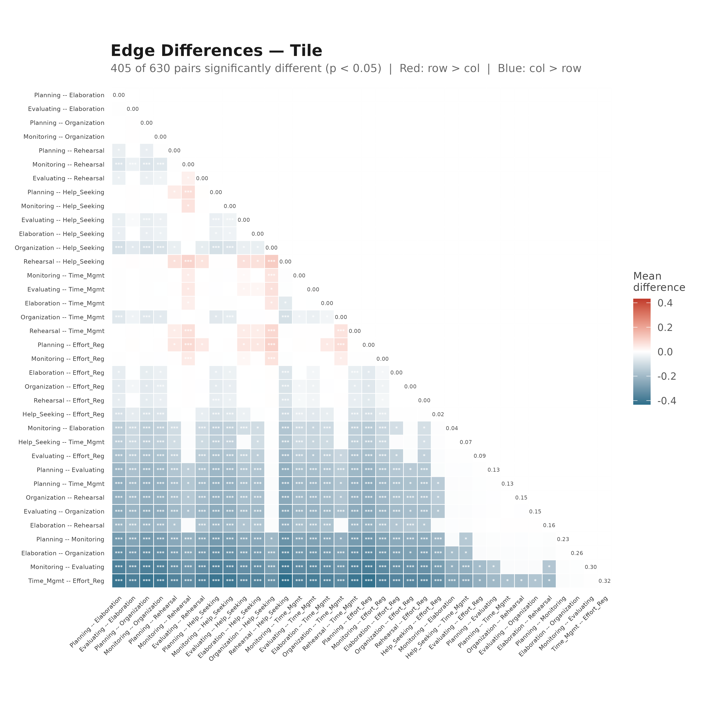
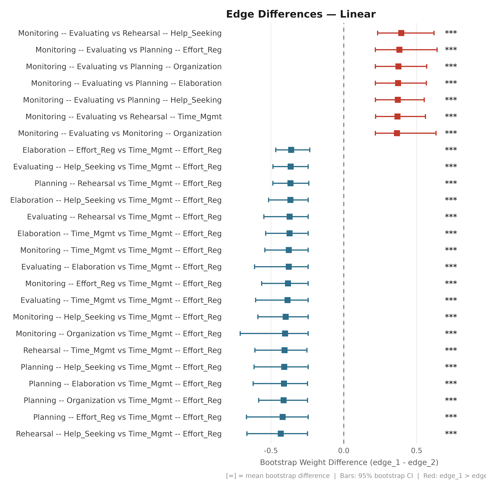
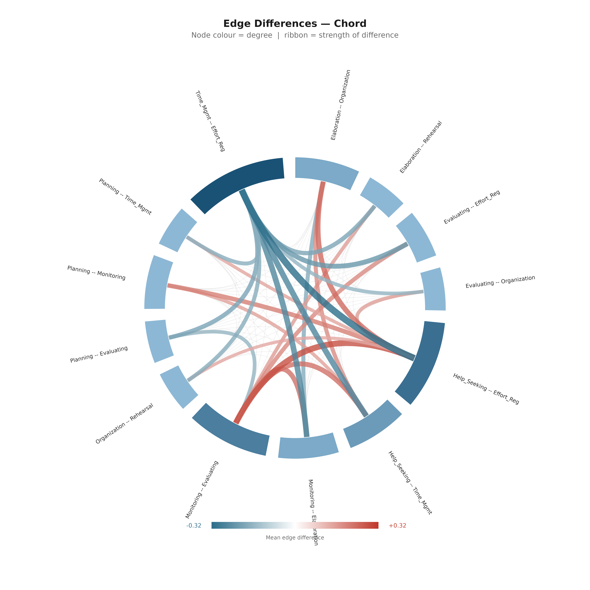
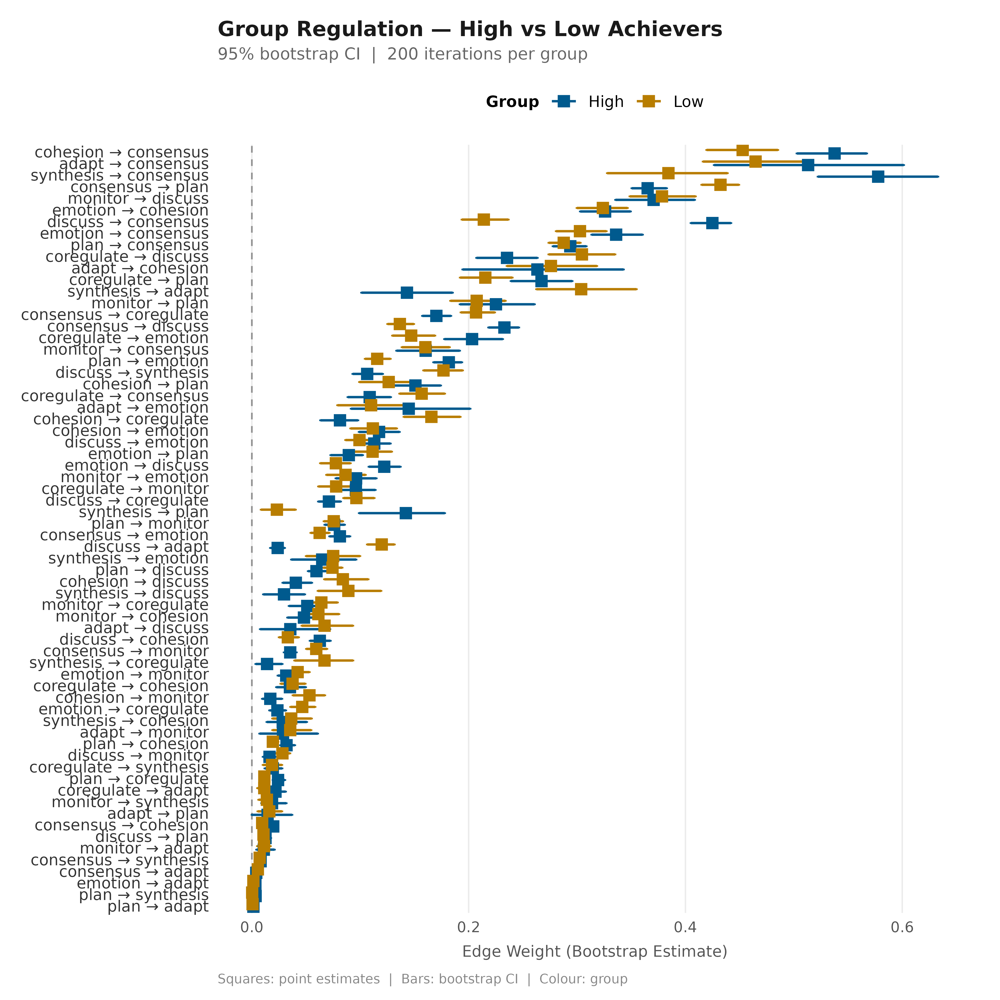

Overview
plot_bootstrap_forest() visualises bootstrapped edge
weights and confidence intervals for any network estimated with
bootstrap_network() or boot_glasso(). Three
layouts are available:
| Layout | Best for |
|---|---|
"linear" |
Many edges, precise comparison |
"circular" |
Medium networks, publication figures |
"grouped" |
Source-node grouping, colour by community |
plot_edge_diff_forest() visualises pairwise edge
weight differences from a boot_glasso object. Four
layouts: "linear", "circular",
"chord", "tile".
1. TNA Network (relative transitions)
net_tna <- build_network(human_wide, method = "relative")
boot_tna <- bootstrap_network(net_tna, iter = 200, seed = 42)Linear
plot_bootstrap_forest(boot_tna,
title = "Human-AI Interaction Network",
subtitle = "95% bootstrap CI | 200 iterations")
Circular
plot_bootstrap_forest(boot_tna, layout = "circular",
title = "Human-AI Interaction Network — Circular")
Grouped Radial
plot_bootstrap_forest(boot_tna, layout = "grouped",
title = "Human-AI Interaction — Grouped by Source Node")
2. Glasso Network (partial correlations)
net_srl <- build_network(srl_strategies, method = "glasso")
boot_srl <- boot_glasso(net_srl, iter = 200, seed = 42)Linear
plot_bootstrap_forest(boot_srl,
title = "SRL Strategies — Partial Correlation Network")
3. Edge Difference Plots (glasso)
Compare whether pairs of edges have significantly different weights.
Tile Heatmap
plot_edge_diff_forest(boot_srl, layout = "tile",
title = "Edge Differences — Tile")
Linear Forest
plot_edge_diff_forest(boot_srl, layout = "linear", n_top = 25,
title = "Edge Differences — Linear")
Chord Diagram
plot_edge_diff_forest(boot_srl,
layout = "chord",
nonzero_only = TRUE,
show_nonsig = TRUE,
title = "Edge Differences — Chord",
subtitle = "Node colour = degree | ribbon = strength of difference")
4. Grouped Networks
Compare bootstrap CIs across groups in one plot.
nets_grp <- build_network(group_regulation_long,
method = "relative", actor = "Actor",
action = "Action", time = "Time",
group = "Achiever")
boots_grp <- bootstrap_network(nets_grp, iter = 200, seed = 42)
plot_bootstrap_forest(boots_grp,
title = "Group Regulation — High vs Low Achievers",
subtitle = "95% bootstrap CI | 200 iterations per group")